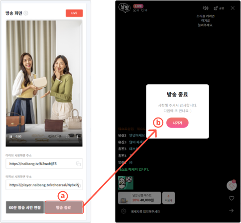

라이브 방송 종료
-
날방TV 라이브 방송의 종료
- 1. 날방TV 운영자 웹 페이지 방송 관리 화면에서 ⓐ방송 종료 버튼을 누르면 방송이 종료됩니다.
- 2. 방송이 종료되면 날방TV 라이브 방송 화면에 방송 종료를 알리는 ⓑ방송 종료 안내 팝업이 노출되며 방송이 종료됩니다.
- 3. 방송이 종료되면 해당 방송에 대한 방송 관리 화면이 자동으로 종료되고 종료된 방송은 지난 방송 목록에 등록됩니다.
- 4. 방송이 종료된 후 지난 방송 목록에서 해당 방송을 선택하면 VOD 서비스나 각종 방송 정보를 확인할 수 있습니다.
-
날방TV 지난 방송 정보
- 날방TV 생방송 종료 후 방송과 관련된 다양한 정보를 확인하고 VOD 서비스를 이용할 수 있습니다.
- 지난 방송 불러오기
- 1. 지난 방송의 내용을 보려면 [날방TV 운영자 웹 페이지/지난 방송 목록 리스트]에서 보고자하는 지난 방송의 ⓐ 제목 부분을 선택하여 클릭하면 해당 방송의 상세한 정보를 볼 수 있는 페이지로 이동합니다.
2.지난 방송 정보 화면
-
ⓐ VOD 화면
날방TV 방송앱으로 촬영된 영상을 재생
-
ⓑ VOD 시청 화면 주소
실제 방송된 생방송 화면의 VOD영상을 볼 수 있는 링크
-
ⓒ 시청자 수
생방송 중 접속한 시청자 수와 총 방송시간에 대한 데이터 제공
-
ⓓ 상품 정보
생방송 중 노출된 상품 목록을 제공
-
ⓔ 시청자 통계
시청자들의 성별/연령대 분포 정보를 확인
-
ⓕ 판매량
방송 시청자들의 상품별 구매량 확인 가능
-
ⓖ VOD 삽입
저장된 VOD를 웹페이지에 삽입하기 위한 설정 기능
-
ⓗ 채팅 로그
생방송 중 입력된 채팅을 재확인하는 기능
-
- VOD 시청자
저장된 VOD를 다시 재생하여 시청 가능합니다.
-
ⓐ 방송 화면
방송 종료 후 VOD 방송 화면 확인 가능
-
ⓑ VOD
저장된 VOD 재시청 가능 / 시청화면 주소를 활용하여 원하는 페이지에서 VOD를 설치 및 재생
-
ⓒ VOD 시청 화면 주소
방송 종료 후 VOD 방송 화면 확인 가능
- VOD 시청자
-
- VOD 삽입
저장된 VOD를 웹사이트 내에 게시 및 노출할 수 있는 html 소스 코드를 제공합니다.
- [VOD 삽입 설정]
- 크기 설정 : VOD 재생 화면의 넓이를 설정할 수 있습니다. 가로 넓이를 기준으로 세로 길이가 자동 조절됩니다.
- 재생 시작 시간 설정 : VOD 재생 시간을 설정할 수 있습니다.
- 자동 재생 : VOD 노출 시 자동 재생 여부를 설정할 수 있습니다.
- [VOD 소스코드]
- 삽입 설정이 적용된 소스코드를 복사 후 자사몰 내 원하는 영역에 노출시킬 수 있습니다.
- VOD 삽입
-
- 통계 확인
생방송과 관련된 통계를 확인할 수 있습니다.
- [시청자 수]
- 누적 시청자 수 : 라이브 방송의 누적 시청자 수입니다.
- 최고 시청자 수 : 라이브 방송의 최고 동시 시청자 수입니다.
- 라이브 재생 시간 : 라이브 방송의 누적 재생 시간입니다.
- [시청자 통계]
- 방송을 시청한 회원들의 연령대, 성별 분포도를 보여줍니다.
- 시청자 특성을 분석하여 방송 컨텐츠 준비가 가능합니다.
- 통계 확인
-
- 채팅 로그 확인
생방송 중 입력된 채팅 로그를 확인할 수 있습니다.
- [채팅 로그 확인]
- 라이브 방송 중 입력된 채팅을 확인할 수 있습니다.
- [저장된 채팅 확인]
- 라이브 방송 중 저장된 채팅을 확인할 수 있습니다.

- 채팅 로그 확인